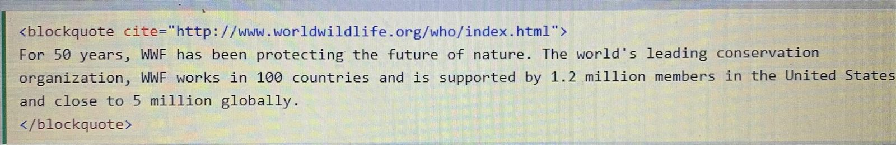
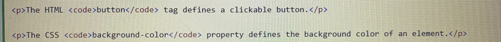

Table representa a criação de tabelas para o design de uma homepage, tornando possível alinhamentos que não poderiam ser realizados com comandos simples. Para inserir uma tabela usamos os comandos:
Exemplo:
| Coluna 1 | Coluna 2 | Coluna 3 |
| Chaiane Maneira | 18 anos | Irati, Paraná |
Del é a tag que define um texto que foi deletado do documento.
Exemplo:
Texto indisponível.
É renderizado pelos navegadores com um traço no texto.
Ins é a tag que define um texto que foi inserido em um documento
Geralmente sendo sublinhados pelos navegadores.
Exemplo:
Minha cor favorita é vermelha amarela.
Sub é a tag que define um texto subscrito. Aparecendo por meio caractere abaixo da linha normal, sendo renderizado por uma fonte menor, podendo ser usado para fórmulas químicas.
Exemplo: A fórmula da água é H20.
Sup é a tag que define um texto sobrescrito Aparecendo por meio caractere acima da linha normal, sendo renderizado por uma fonte menor, podendo ser usado para notas de rodapé.
Exemplo: Para pesquisar qualquer site na internet, digite WWW.
Blockquote é a tag que especifica seções tiradas de outras fontes,geralmente os navegadores recuam os elementos 
Q é a tag que define pequenas citações,, sendo inseridas entre aspas.
Otimismo é o que leva as pessoas para frente. Nada pode ser feito sem confiança. Helen Keller.
Abbr é a tag que define uma abreviatura ou acrônimo, como Sr, Sra, Dr, Dra, entre outros.
Exemplo: OMS foi fundada em 7 de abril de 1948.
Addres é a tag que define informações de contato do proprietário de um artigo, podendo ser email, endereço físico, número de telefone, URL, entre outros.
O texto é renderizado em itálico, junto com uma quebra de linha no início e no fim.
Sintaxe:
chaianevitoriam@gmail.comEmail para contato.Cite é a tag que define o nome de um trabalho criativo, sendo um livro, filme, poema ou música., sendo geralmente renderizado em itálico.
Exemplo: Anne With an E por Green Glabes, 1908.
BDO é a tag que é usada para substituir a direção do texto.
Exemplo: O texto irá da esquerda para direita.
Code é a tag usada para definir uma parte de um código de computador. O conteúdo interno é mostrado na fonte monoespaçada da máquina.
Exemplo: 
Pre é a tag usada para definir o texto pré-formatado, sendo exibido em uma fonte de largura fixa, preservando os espaços e as quebras de linha.
O texto será exibido exatamente como foi escrito no código-fonte HTML.
Exemplo:
O texto será exibido exatamente como foi escrito no código-fonte HTML.
KBD é a tag usada para definir a entrada do teclado. O conteúdo interno é mostrado na fonte monoespaçada da máquina.
Exemplo: Use o Ctrl + C para copiar esse texto.